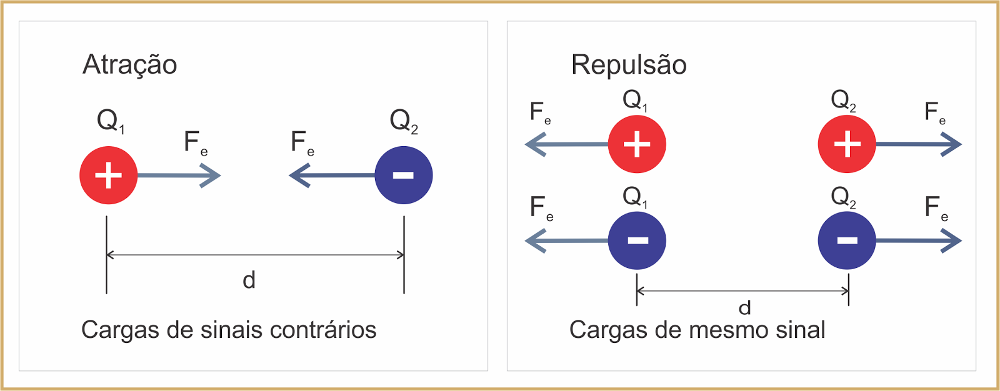

Entenda o que é a Lei de Coulomb e a sua importância para a Ciência.
A Lei de Coulomb descreve a força eletrostática entre duas partículas carregadas. Ela afirma que a força eletrostática entre duas partículas carregadas é diretamente proporcional ao produto de suas cargas e inversamente proporcional ao quadrado da distância entre elas.
Matematicamente, a Lei de Coulomb é expressa da seguinte forma:
F = k * (|q1 * q2|) / r²
Onde:
Além disso, sabemos que cargas de sinal igual repelem-se enquanto cargas de sinais opostos atraem-se, como mostra a figura abaixo
A Lei de Coulomb é fundamental para entender o comportamento das cargas elétricas e é uma das leis mais importantes da eletrostática.
Vale a pena ressaltar que, mesmo que as cargas tenham módulos diferentes, a força de atração entre elas é igual, uma vez que, de acordo com a 3ª lei de Newton — a lei da ação e reação —, a força que as cargas fazem entre si é igual em módulo. Essas encontram-se na mesma direção, porém, em sentidos opostos.
Voltar para a Página Inicial